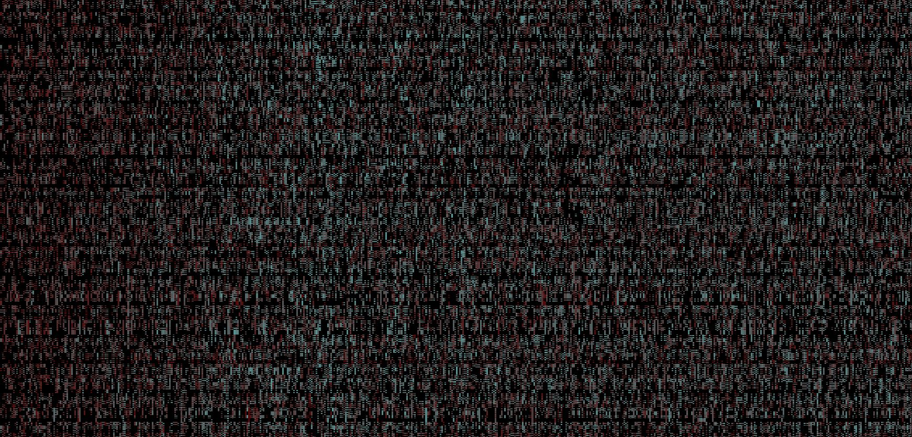

Feedback Identification Algorithm
 GithubThis project is an attempt to build an algorithm that will numerically determine when feedback is occuring in a live acoustic signal. This is accomplished by taking the FFT periodically, which is then fed into an identification algorithm. The project is currently at an optimization phase, and conrete results should be available in the near future.
Mandlebrot Set Visualization
 Github
Github
This project will be an exercise in OpenGL and numerical analysis. The project is in the research phase right now, with coding scheduled for the end of January.